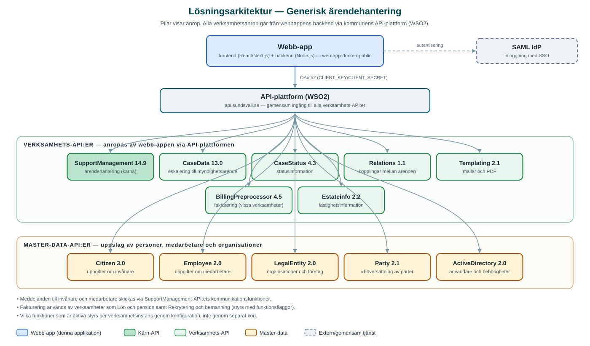

Generisk ärendehantering
En fullt konfigurerbar webbapplikation för att ta emot, handlägga och avsluta ärenden och förfrågningar – en gemensam lösning som anpassas till varje verksamhets behov.
Om applikationen
Generisk ärendehantering är ett verktyg för kommunens handläggare. I stället för att varje verksamhet skaffar och underhåller sitt eget ärendesystem erbjuder applikationen en gemensam grund som konfigureras per verksamhet – med egna ärendekategorier, roller, statusflöden och kommunikationsmallar.
Handläggaren kan registrera ärenden som kommer in via olika kanaler, se all information om den som ärendet gäller, kommunicera med invånare och medarbetare direkt från ärendet, samt följa ärendet från registrering till avslut. Färdiga mallar gör att brev och beslut får ett enhetligt utförande.
Eftersom lösningen är generisk kan nya verksamheter anslutas utan att ny programvara behöver utvecklas – det är i första hand en fråga om konfiguration. Det ger kort startsträcka, lägre förvaltningskostnad och en enhetlig arbetsmiljö för handläggare i hela organisationen.
Verksamheter som använder applikationen
- Kontakt Sundsvall – kommunens kontaktcenter för invånarnas frågor och ärenden.
- Kontakt Ånge – motsvarande kontaktcenter för Ånge kommun, som delar lösningen.
- Intern kundtjänst – stöd och service till kommunens medarbetare.
- Lön och pension – ärenden som rör medarbetarnas lön och pension.
- Rekrytering och bemanning – processer kring rekrytering och bemanning.
- Servicecenter Ekonomi – ekonomirelaterade ärenden och förfrågningar.
- MittSverige Vatten & Avfall – kundärenden inom vatten och avfall.
- Barn och utbildning – ärenden inom förskola och skola.
- Lokalplanering – ärenden som rör kommunens lokalförsörjning.
Att såväl förvaltningar som kommunala bolag och en annan kommun använder samma lösning visar styrkan i det generiska angreppssättet: samma öppna kodbas, konfigurerad för olika behov.
Teknisk dokumentation
Nedan beskrivs hur applikationen är uppbyggd, vilka API:er den använder och vad som krävs för att driftsätta den. Informationen är härledd ur källkoden och dess konfiguration på GitHub.
Arkitektur

Applikationen består av en webbaserad frontend och en tillhörande backend som utvecklas i samma kodbas (monorepo). Backend förmedlar alla anrop till verksamhetssystemen via kommunens gemensamma API-plattform (WSO2) – frontend pratar aldrig direkt med underliggande system. Inloggning sker med organisationens identitetslösning via SAML (single sign-on).
Samma kodbas används för samtliga verksamhetsinstanser. Vilken instans som byggs, och hur den beter sig, styrs av konfiguration och funktionsflaggor – inte av separata kodgrenar.
Teknikstack
- Körmiljö: Node.js 20 LTS eller senare
- Frontend: React-baserad webbapplikation
- Pakethantering: Yarn
- Test: Vitest (backend, med kodtäckning), Cypress och Playwright (end-to-end)
API-beroenden
Applikationen konsumerar följande API:er via kommunens API-plattform. Versionerna är hämtade ur källkodens API-konfiguration.
| API | Version | Användning |
|---|---|---|
| SupportManagement | 14.9 | Kärnan i ärendehanteringen – ärenden, kategorier, status, kommunikation och handläggning |
| CaseData | 13.0 | Eskalering av ärenden till myndighetsärende |
| CaseStatus | 4.3 | Statusinformation om ärenden |
| Relations | 1.1 | Relationer mellan ärenden |
| Templating | 2.1 | Mallar för brev, beslut och andra dokument |
| BillingPreprocessor | 4.5 | Faktureringsunderlag (används av vissa verksamheter, t.ex. Lön och pension) |
| Estateinfo | 2.2 | Fastighetsinformation i fastighetsanknutna ärenden |
| Citizen | 3.0 | Uppgifter om invånare |
| Employee | 2.0 | Uppgifter om medarbetare |
| LegalEntity | 2.0 | Uppgifter om organisationer och företag |
| Party | 2.1 | Id-översättning av parter i ärenden |
| ActiveDirectory | 2.0 | Uppslag av användare och behörigheter |
Konfiguration och driftsättning
- Varje verksamhetsinstans konfigureras med egna miljövariabelfiler för frontend respektive backend.
- Åtkomst till API-plattformen kräver klientnyckel och klienthemlighet (
CLIENT_KEY/CLIENT_SECRET) som utfärdas i WSO2. - Inloggning kräver SAML-konfiguration: ingångspunkt till identitetsleverantören samt certifikat och nyckelpar (
SAML_ENTRY_SSO,SAML_IDP_PUBLIC_CERT,SAML_PRIVATE_KEY,SAML_PUBLIC_KEY). - Funktioner kan slås av och på per instans via funktionsflaggor i frontend-konfigurationen.
- Applikationen kan köras i utvecklings- och produktionsläge, med produktionsbyggen per verksamhetsinstans.
Källkod
Källkoden är öppen och utvecklas aktivt hos Sundsvalls kommun på GitHub. I källkodsförrådet finns även instruktioner för att klona, konfigurera och starta applikationen i egen miljö.